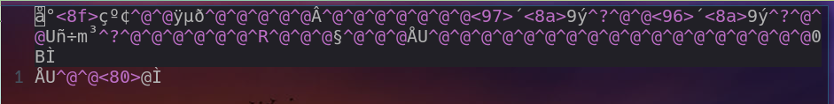

转载自码农有道的博客
打开和关闭文件
文件指针
打开文件的时候，C语言为打开的文件分配一个文件信息区，该信息区中包含文件描述信息、该文件所使用的缓冲区大小及缓冲区位置、该文件当前读写到的位置等基本信息。这些信息保存在一个结构体类型变量中struct _IO_FILE，这个结构体有一个别名FILE–typedef struct _IO_FILE FILE，FILE结构体和对文件操作的库函数在stdio.h头文件中声明的。
打开文件的时候，调用打开文件的函数fopen时会动态分配一个FILE结构体，并把FILE结构体地址作为函数的返回值，即文件指针。调用关闭文件的函数fclose时候，除了关闭文件，还会释放文件指针占用的内存空间
打开文件
- 使用
fopen创建或者打开一个文件1
2extern FILE *fopen (const char *__filename,
const char *__modes);
参数filename 是字符串，表示需要打开的文件名，可以包含目录名，如果不包含路径就表示程序运行的目录。实际开发中，采用文件的全路径，即包含目录名。
参数mode也是字符串，表示打开文件的模式，打开模式可以是下列值中的一个
| 模式 | 含义 | 说明 |
|---|---|---|
| rt | 只读 | 文件必须存在，否则打开失败 |
| wt | 只写 | 文件存在，则清除原文件内容；文件不存在，则新建文件 |
| at | 追加只写 | 同上 |
| rt+ | 读写 | 文件必须存在，+表示在只读上增加可写功能 |
| wt+ | 读写 | 在只写上增加可读 |
| at+ | 读写 | 在追加只写基础上增加可读 |
如果是二进制文件，则模式改为
1
"rb"、"wb"、"ab"、"rb+"、"wb+"、"ab+"
如果打开文本，则
t可以省略，rt可以简写为r
关闭文件
1 | int fclose (FILE *__stream); |
文本文件的读写
在实际开发中，文本文件以行为单位存放字符串，如C程序的源代码，一段文字等，所以一般是按行写入或读取数据。
向文件中写入数据
- 可使用
fputc,fputs,fprintf写文件，一般使用fprintf1
int fprintf (FILE *__stream,const char *__format, ...);
与
printf用法大致相同，只是第一个参数多了个FILE文件指针
从文件中读取数据
C语言从文件中读取数据的库函数有fgetc、fgets、fscanf，在实际开发中，fgetc和fscanf没什么用，只介绍fgets就可以了。fgets函数的声明如下：
1 | char *fgets (char *buf, int size, FILE *__stream) |
fgets的功能是从文件中读取一行
参数buf是一个字符串，用于保存从文件中读到的数据
参数size是打算读取内容的长度
参数fp是待读取文件的文件指针。
如果文件中将要读取的这一行的内容的长度小于size，fgets函数就读取一行，如果这一行的内容大于等于size，fgets函数就读取size-1字节的内容。
调用fgets函数如果成功的读取到内容，函数返回buf，如果读取错误或文件已结束，返回空，即0。如果fgets返回空，可以认为是文件结束而不是发生了错误，因为发生错误的情况极少出现
二进制文件读写
写入数据
fwrite() 库函数用来向文件中写入块数据，它的原型为：
1 | size_t fwrite(const void *ptr, size_t size, size_t nmemb, FILE *stream); |
参数的说明：
ptr：为内存区块的指针，存放了要写入的数据的地址，它可以是数组、变量、结构体等。
size：固定填1。
nmemb：表示打算写入数据的字节数。
fp：表示文件指针。
函数的返回值是本次成功写入数据的字节数，一般情况下，程序员不必关心fwrite函数的返回值。
- 示例
1
2
3
4
5
6
7
8
9
10
11
12
13
14
15
16
17
18
19
20
21
22
23
24
25
26
27
28
29
typedef struct{
char name[50];
int age;
int height;
}GIRL;
int main()
{
GIRL girl;
FILE *fp;
//二进制只写打开文件
if((fp=fopen("/home/duguosheng/study/c/file/f1.txt", "wb"))==0)
{
printf("文件打开失败");
return -1;
}
strcpy(girl.name, "小红");
girl.age = 18;
girl.height = 167;
//将结构体存入文件
fwrite(&girl, 1, sizeof(girl), fp);
fclose(fp);
}
vi打开该二进制文件

从文件中读取数据
1 | size_t fread(void *ptr, size_t size, size_t nmemb, FILE *fp); |
ptr：用于存放从文件中读取数据的变量地址，它可以是数组、变量、结构体等。
size：固定填1。
nmemb：表示打算读取的数据的字节数。
fp：表示文件指针。
调用fread函数如果成功的读取到内容，函数返回读取到的内容的字节数，如果读取错误或文件已结束，返回空，即0。如果fread返回空，可以认为是文件结束而不是发生了错误，因为发生错误的情况极少出现。
文件定位
在文件内部有一个位置指针，用来指向当前读写的位置，也就是读写到第几个字节。在文件打开时，如果打开模式是r和w，位置指针指向文件的第一个字节，如果打开模式是a，位置指针指向文件的尾部。每当从文件里读n个字节或文件里写入n个字节之后位置指针也会向后移动n个字节
C语言提供了ftell、rewind和fseek三个库函数来实现文件定位功能。
ftell函数
ftell函数用来返回当前文件位置指针的值，这个值是当前位置相对于文件开始位置的字节数。它的声明如下：
1 | long ftell(FILE *fp); |
rewind函数
rewind函数用来将位置指针移动到文件开头，它的声明如下：
1 | void rewind ( FILE *fp ); |
fseek函数
fseek() 用来将位置指针移动到任意位置，它的声明如下：
1 | int fseek ( FILE *fp, long offset, int origin ); |
- fp 为文件指针，也就是被移动的文件。
- offset 为偏移量，也就是要移动的字节数。之所以为 long 类型，是希望移动的范围更大，能处理的文件更大。offset 为正时，向后移动；offset 为负时，向前移动。
- origin 为起始位置，也就是从何处开始计算偏移量。C语言规定的起始位置有三种，分别为：0-文件开头；1-当前位置；2-文件末尾。
fseek(fp,100,0); // 从文件的开始位置计算，向后移动100字节。
fseek(fp,100,1); // 从文件的当前位置计算，向后移动100字节。
fseek(fp,-100,2); // 从文件的尾部位置计算，向前移动100字节
文件缓冲区
在操作系统中，存在一个内存缓冲区，当调用fprintf、fwrite等函数往文件写入数据的时候，数据并不会立即写入磁盘文件，而是先写入缓冲区，等缓冲区的数据满了之后才写入文件。还有一种情况就是程序调用了fclose时也会把缓冲区的数据写入文件。
在实际开发中，如果程序员想把缓冲区的数据立即写入文件，可以调用fflush库函数，它的声明如下：
1 | int fflush(FILE *fp); |
函数的参数只有一个，即文件指针，返回0成功，其它失败，程序员一般不关心它的返回值。
标准输入，标准输出，标准错误
Linux操作系统为每个程序默认打开三个文件，即标准输入stdin、标准输出stdout和标准错误输出stderr，其中0就是stdin，表示输入流，指从键盘输入，1代表stdout，2代表stderr，1,2默认是显示器。
1 | printf("Hello world.\n"); |
这几个文件指针没什么用，让大家了解一下就行。在实际开发中，我们一般会关闭这几个文件指针。